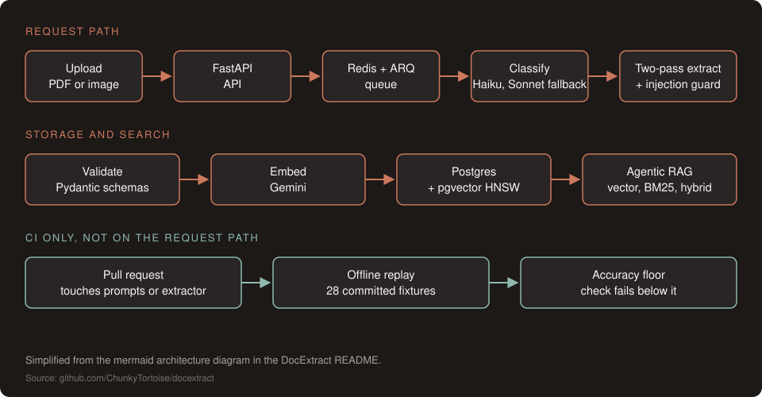
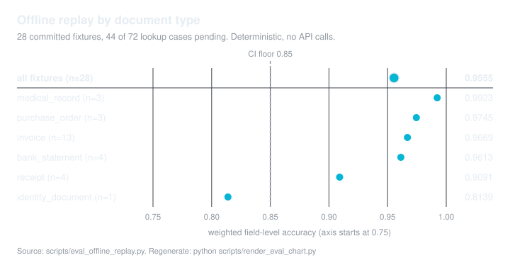

Work / DocExtract
DocExtract: document extraction with an eval gate in CI
Turning PDFs and scans into validated, searchable records, with an extraction eval that runs as a check on every relevant pull request.
Code
python scripts/eval_offline_replay.py --floor 0.85Problem
Document extraction looks easy in a demo and drifts in production. A prompt tweak or a model swap can quietly drop field accuracy on invoices, receipts and statements, and nobody notices until a downstream report is wrong. DocExtract was built under a paid client engagement that needed structured fields it could trust, plus evals that run as checks rather than as a one-off demo.
Approach
- Two-pass extraction. Pass 1 extracts fields with a confidence score. A correction pass runs only when confidence falls below a per-document-type threshold (ADR-0003).
- Cost-aware routing. Haiku classifies, Sonnet extracts, prompt caching covers system prompts, and a circuit breaker falls back to Haiku.
- Validated output. Pydantic v2 schemas reject malformed extractions before they're stored.
- Search over what was extracted. Embeddings go to Postgres with pgvector, and questions run through an agentic RAG loop over vector, BM25 and hybrid tools.
- Injection defense on both paths. Fencing, scanning and output sanitization on text and vision extraction (ADR-0020).
- Evals as a CI check. Every pull request that touches prompts or the extractor re-scores committed extraction outputs against expected fields, and the check fails below a floor or on a drop from baseline. No API key or spend required. Because the outputs are frozen, this catches scorer, schema and fixture regressions; prompt and model changes are measured by a separate paid live eval job when an API key is configured.
Architecture

Results
| Result | Value | Source |
|---|---|---|
| Weighted field-level score (critical fields 2×) | 95.5% on a 28-fixture offline replay | evidence note |
| CI floor | 0.85; the check also fails on a drop of more than 0.03 from baseline | eval-gate.yml |
| Regression caught | A demo branch that corrupted eight fixtures failed the check | eval-gate proof |
| Eval authoring corpus | 200 cases (150 golden, 50 adversarial) | evals/ |

scripts/render_eval_chart.py.What I'd do next
- Record prediction fixtures for the remaining lookup cases so the replay covers the whole eval dataset.
- Run the held-out live protocol and publish live-model accuracy next to the replay score.
- Measure retrieval recall, support and abstention on a labeled query set.
- Replace modeled cost and latency with a metered benchmark run.
Methodology & limits
What the numbers cover
- The score is a deterministic replay of committed prediction fixtures, not a live-model grade and not F1. It gives partial credit: strings by normalized Levenshtein similarity, numbers within ±1%, and half credit for a value where null was expected. The 200-case authoring corpus is a separate population from the 28 scored fixtures.
- The replayed outputs are frozen, so a prompt or model change does not move the replay score. The paid live eval job measures those changes and runs only when an API key is configured in CI.
- Retrieval quality (recall, support, abstention) is not measured yet.
- The eval gate reports a passing or failing check.
mainis not branch-protected, so the check does not block merges (repository audit, 2026-09-19). - Cost and latency figures in the repo are modeled until a metered run is committed.
- DocExtract was built under a paid client engagement; an authorized walkthrough is available on request.
- Full detail: the Methodology & limits section of the README.